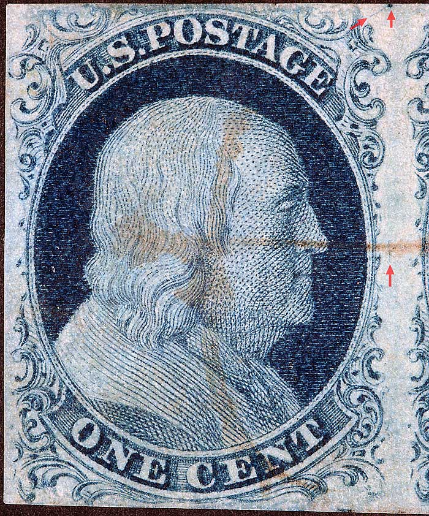
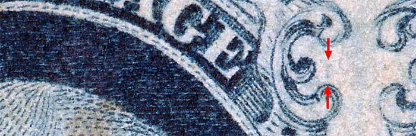
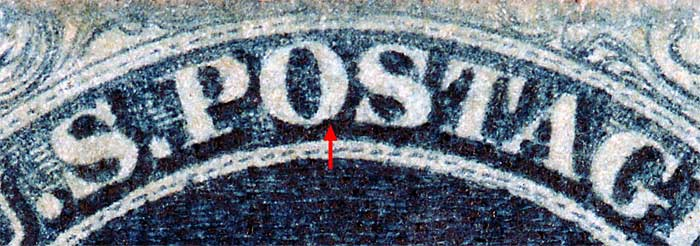

1¢ Franklin Issue of 1851-1857, PLATE 2 Position 78R2, (Scott #7 shown) |
| Blue, Type II, Relief A Issued both imperforate (Scott 7) and perforated (Scott 20). Part of a horizontal strip of 3 consisting of 78R2, 79R2 and 80R2. PLATING NOTES: |
|  |
| Figure 1. (Below) Detail view of a dot of color and vertical blur above Ornament M not illustrated in the Neinken plating diagram but confirmed as consistent.  |
| Figure 2. (Below) Detail view of a vertical line of color in the O of POSTAGE not illustrated in the Neinken plating diagram but confirmed as consistent. It should be noted that similar plating marks like this one shown occur on several positions from Plate 2.  |
DISCLAIMER and COPYRIGHT INFORMATION: Thanks for visiting this site. I hope you learn something new as we are making new discoveries all the time. You, the visitor, have my permission to link to my pages and to share the INFORMATION with others. The images themselves fall under the fair use guidelines established by the United States Congress and Copyright law. Basically contact us before using. I also ask in return that you send me an e-mail if I have made a mistake, or have made some other technical blunder that in my rush to put these pages up would cause the visitor confusion. Please also visit my other website at www.slingshotvenus.com. and support the live music arts. While your there, be sure to purchase our music. There are not many philatelic rock stars around and we need all the help we can get. :-) I can be reached at: nerdman@ix.netcom.com Update 2.12.2012 |